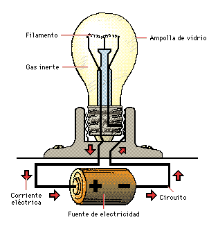
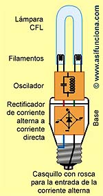

Las lámparas o bombillas transforman la energía eléctrica en energía luminosa o lumínica.
En las bombillas incandescentes sólo entre el 15% y el 25% de la energía eléctrica se transforma en luz, el resto se pierde en forma de calor.
Si nos fijamos, vemos que la parte que se ilumina es un conductor muy fino, el filamento.
Al estrecharse el conductor, los electrones chocan más a menudo con los átomos del filamento, con lo que este se calienta a más de 3000ºC. A estas temperaturas, la mayoría de los metales se funden. Por eso se utiliza tugsteno (Tg), ya que su punto de fusión es de 3200ºC.

En las bombillas denominadas de bajo consumo o CFL (Compact Fluorescent Lamp – Lámpara Fluorescente Compacta), el rendimiento energético es mucho mayor.
Cuando enroscamos la lámpara CFL en un portalámpara (igual al que utilizan la
mayoría de las lámparas incandescentes) y accionamos el interruptor de
encendido, la corriente eléctrica alterna fluye hacia el balasto electrónico,
donde un rectificador se encarga de convertirla en
corriente directa y mejorar, a su vez, el factor de potencia de la lámpara. A
continuación un circuito, se encarga de originar una corriente alterna con una frecuencia superior.
Desde el mismo momento en que los filamentos de una lámpara CFL se encienden, el
calor que producen, ioniza el gas inerte que contiene el tubo en su interior,
creando un puente de plasma entre los dos filamentos. A través de ese puente se
origina un flujo de electrones, que proporcionan las condiciones necesarias para
que el balasto electrónico genere una chispa y se encienda un arco eléctrico
entre los dos filamentos. En este punto del proceso los filamentos se apagan y
se convierten en dos electrodos, cuya misión será la de mantener el arco
eléctrico durante todo el tiempo que permanezca encendida la lámpara. El arco
eléctrico no es precisamente el que produce directamente la luz en estas
lámparas, pero su existencia es fundamental para que se produzca ese fenómeno.
A partir de que los filamentos de la lámpara se apagan, la única misión
del arco eléctrico será continuar y mantener el proceso de ionización del gas
inerte. De esa forma los iones desprendidos del gas inerte al chocar contra los
átomos del vapor de mercurio contenido también dentro de tubo, provocan que los
electrones del mercurio se exciten y comiencen a emitir fotones de luz
ultravioleta. Dichos fotones, cuya luz no es visible para el ojo humano, al
salir despedidos chocan contra las paredes de cristal del tubo recubierto con la
capa fluorescente. Este choque de fotones ultravioletas contra la capa
fluorescente provoca que los átomos de fluor se exciten también y emitan fotones
de luz blanca, que sí son visibles para el ojo humano, haciendo que la lámpara
se encienda.

VENTAJAS DE LAS LÁMPARAS AHORRADORAS
CFL COMPARADAS CON LAS INCANDESCENTES.
* Ahorro en el consumo eléctrico. Consumen sólo la 1/5
parte de la energía eléctrica que requiere una lámpara incandescente para
alcanzar el mismo nivel de iluminación, es decir, consumen un 80% menos para
igual eficacia en lúmenes por watt de consumo (lm-W).
* Recuperación de la inversión en 6
meses (manteniendo las lámparas encendidas un promedio de 6 horas diarias) por
concepto de ahorro en el consumo de
energía eléctrica y por incremento de horas de uso sin que sea necesario
reemplazarlas.
* Tiempo de vida útil aproximado entre 8000 y 10000 horas, en
comparación con las 1000 horas que ofrecen las lámparas incandescentes.
* No
requieren inversión en mantenimiento.
* Generan 80% menos calor que las
incandescentes, siendo prácticamente nulo el riesgo de provocar incendios por
calentamiento si por cualquier motivo llegaran a encontrarse muy cerca de
materiales combustibles.
* Ocupan prácticamente el mismo espacio que una
lámpara incandescente.
* Tienen un flujo luminoso mucho mayor en lúmenes por
watios (lm-W) comparadas con una lámpara incandescente de igual potencia.
* Se
pueden adquirir con diferentes formas, bases, tamaños, potencias y tonalidades
de blanco.
Aquí tenemos una infografía sobre las lamparas (o bombillas).